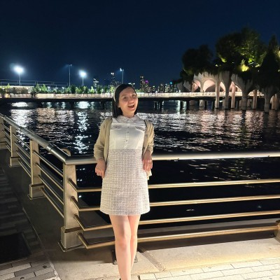

About Me
Hi, I'm Ya-Wen Cheng, a Ph.D. student in Accounting Information Systems (AIS) at Rutgers Business School.
More about me
My research interests include blockchain auditing, cryptocurrency, and state school district fiscal monitoring and early warning systems. I'm passionate about leveraging emerging technologies and data-driven approaches to improve transparency, accountability, and decision-making.
Beyond research, I'm a highly energetic and enthusiastic person who believes in the power of storytelling. As an educator, I enjoy transforming complex ideas into engaging stories that inspire students and make learning meaningful. Earning my students' trust and recognition has been one of the most rewarding parts of my teaching journey.
I also served on the International Membership Advisory Committee of the American Accounting Association (AAA), where I contributed to initiatives aimed at strengthening international engagement and supporting accounting scholars around the world. This experience further reinforced my belief in the value of connecting people across cultures and academic communities.
My experience at National Defense University has deeply shaped my character, instilling in me a strong sense of honesty, integrity, and responsibility. These are values I carry into everything I do, both professionally and personally.
I believe that great research advances knowledge, great teaching inspires people, and integrity gives meaning to both.

Experience
National Defense University, Taiwan
Continuing Lecturer · June 2022–July 2026
National Science and Technology Council, Taiwan
Research Assistant · January 2024–September 2025
Ministry of National Defense, Taiwan
Budget and Finance Officer · July 2018–August 2021
Teaching
Bilingual Lecturer
At National Defense University, I taught International Finance, Investments, Accounting, and Internal Control in English and Mandarin to over 120 cadets each year.
Accounting Practicum
I led a year-long seminar on financial restatements and local economic crime rates in Taiwan. Five students developed hypotheses, cleaned data in Python, and estimated regressions in SPSS.
Community and Campus Involvement (Volunteer / Unpaid Service)
Committee Member, International Membership Advisory Committee (IMAC)
American Accounting Association (Unpaid Service) · Aug 2025 – Aug 2026
- Identify and support the goal of the American Accounting Association (AAA) to increase international membership and better provide support for international members.
Deputy Secretary-General
Taiwan Society of Military Management Consultants (Unpaid Service) · Mar 2023 – Mar 2024
- Coordinated seminars and conferences (scheduling, logistics, post-event dinners) and recruited corporate and organizational sponsors.
- Managed annual membership fee collection and financial records; compiled conference manuals and handouts.